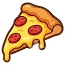

Health
Health
Hunger Health
HungerEat to survive. Fly to the two planets for food, hunt animals, mine asteroids, build in space.
Move WASD / Arrows · Look mouse (click to capture, Esc to release)
Space / 8 = tap to hop on a planet, hold to launch up through the clouds into space. Fly down through a planet's clouds and its gravity gently pulls you to the ground.
1-4, 6, 7, 9 / mouse wheel / [ ] select hotbar slot · 5 / left-click tap = place / eat, hold = eat food / break & collect, on a creature = hit (hand 1 dmg, pickaxe/axe 2, spear 5) · 0 / E inventory (drag items into the hotbar)
Meat & apples = food · Wood · Stone · Hull blocks
⚠ Red animals are predators — they spawn where it is night around you (the side of the planet facing away from the sun) and chase you!
✨ Animals can drop an Anti-Gravity Core : put it in your hotbar, select it and tap 5 on a block — that block and every block connected to it gets gravity for good. Space / 8 to jump off.